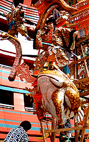
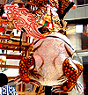
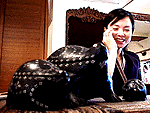
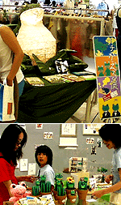
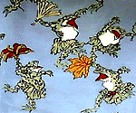

|
博多祇園山笠にカエル登場！
 【博多発=だいちゃん様】博多の町はいよいよ山笠の季節です。キャナルシティー博多に遊びに行ったら飾り山笠の建設現場にでくわしました。それをみてびっくり。人形師が指揮する建設現場には、口から火を噴く巨大なガマカエルがいるではありませんか。これって大王様が山笠の世界にも影響力を発揮したのでしょうか！！さすが、カエル都市の福岡はやることが違います！
 【全国かえる奉賛会】大王も見てびっくりした。博多祇園山笠振興会の中に、カエラーがいるのであろうか。解説書を読むと、標題は『児雷也豪傑譚話』。なんでも、ガマの妖術を使って諸国を荒し回る義賊の児雷也は、お家再興を目指す肥後の侍であったという。その彼が、ガマの妖術を教えてくれた師匠の仇敵、大蛇丸と対決することになった。当然のことに、ガマにとっては大蛇は天敵。このままでは勝てるはずがない！！そのとき、出現したのが蛞蝓（なめくじ）にまたがった傾城あやめ、という姫君であったあああ。 大蛇はガマを一飲みにしようとするが、苦手な蛞蝓がひかえていて、それができず。ガマは、好物の蛞蝓を丸飲みしようとするが、蛇がにらんでいてそれができず。蛞蝓は蛇を震え上がらせているが、かたわらのガマに食べられるのではないかと気がきではない。この場面は、藤橋のだんまり、という歌舞伎で有名な場面だそうである。 大王は歌舞伎はみたことがないが、この卓越した脚本（河上黙阿弥）に感動したので、今度、博多座に歌舞伎がやってきて、この標題がかかったら、みにゆくぞー。カエラーのみんなも見に行こう！
しかし、平成１１年12月05日号で紹介した、ガマ座乗の五右衛門として紹介していた、熊本北パーキングエリアの謎の巨大ガマは、熊本出身の児雷也であったのか。いまやっと分かりました。 泰国製カエル容器で幸福倍増！ 【福岡発=泰国レストラン姫同志記者】泰の雑貨屋さんで発見した、３匹のカエルたちです。もー可愛くて、この子たちは私にとって、とっても大切な３匹です。ほんとにほんとに良かったね〜（涙）ほんとにはるばる日本へ来たかいがあったね〜（号泣）まさか、かえる大王様に会えるとは、この子達もゆめゆめ思っていなかったことでしょう。、、木製でなかが入れ物になっているんですよ。口元が特に可愛いです。
【全国かえる奉賛会】たまたま飲食した泰国レストランででくわした、黒色木製という珍しいカエル。『亀では？』と主張する知人もいたが、大王は一発でカエルと見て所有者の彼女に話しを聞いたぞ。なかなか凝った作りになっていて、真珠片などが埋め込んである美しいカエルである。  プチカエル展が小倉で大行進中！【北九州小倉発=モロー寺井師同志記者】７月１日から１５日まで、福岡県北九州市小倉区の小倉井筒屋新館３階『ニュークリエイターズショップ』で、プチかえる展小倉場所を開催中。カエルのモロー君のフィギュア、携帯ストラップ、キーホルダーや、カエルサボテンなどを展示即売しています。 おかげさまで盛況です。とりあえずしゃしんおおくりします。そしてそこの１階でないすな浴衣発見しました。またけろ天市場で人気のモローペーパーウエイトは、『全国のカエラーにモローを！』をかけ声に、男女の生産要員が福岡の秘密工場で昼夜兼行の大増産、続々と生産が進んでいます。
【全国かえる奉賛会】おおー謎のカエルが傘をさして踊り回っているなんて！りょーこさん！買って浴衣にしましょう。そして、８月１５日にカエル浴衣オフしましょー（笑）
ロケット産業の会社にカエル二千個！【福岡発=しげやん同志記者】日曜日、ぼーっとテレビを見ていた時のこと。ＫｉｎｋｉＫｉｄｓが司会をしている「ピカイチ」の画面にとつぜん、カエルグッズの山が…。番組によると、横浜にある、日本スピンという会社が、会社創立３３年を記念して、初心に帰ることなど願いを込めカエルグッズを集め始め、今現在、２０００点ほど収集しているそうです。画面には、食堂などに整然と、しかも潤沢にディスプレイされたカエルグッズが映し出されました。 この会社、Ｈ２ロケットなどの先端部分を製造しているそうです。そんな、チョーハイテクな会社が社の方針としてカエル化しているのはすばらしいことですがなんといっても、女性層に抜群の人気を誇るＫｉｎｋｉＫｉｄｓの番組で堂々と取り上げられたことは今後のカエラーの一層の増殖を意味するのではないでしょうか！！！！また、Ｈ２ロケットは何かとケチがついてしましたが、後継機種は、先端部分にカエル模様をいれれば、トラブルフリーも間違いない！！
【全国かえる奉賛会】日本スピンの情報を募集するぞー。日本版スペースシャトルの時には、縁起をかついでカエルロケットもいいかもしれない。このところ、失敗続きの衛星ロケットだが、初心にカエルで打ち上げ成功してほしいぞおおおおおおっ。
投稿採用者に武功カエル徽章を授与！ |
かえる古新聞過去に取り上げた記事を見出し付きで一覧したい人は、ここをクリック◆創刊号を見る◆先週号を見る◆話題の号を見る◆かえる新聞の昔を読む
|
私も入っています。。全国かえる奉賛会
大王様に会うには、このバナーをクリック。ずっと奥に写真館があるぞ。全国かえる奉賛会に入会するには、自分のホームページのどこかに、下の部分を追加するとバナーがリンク付きで表示されるぞ。どんどん入会しましょー |


|